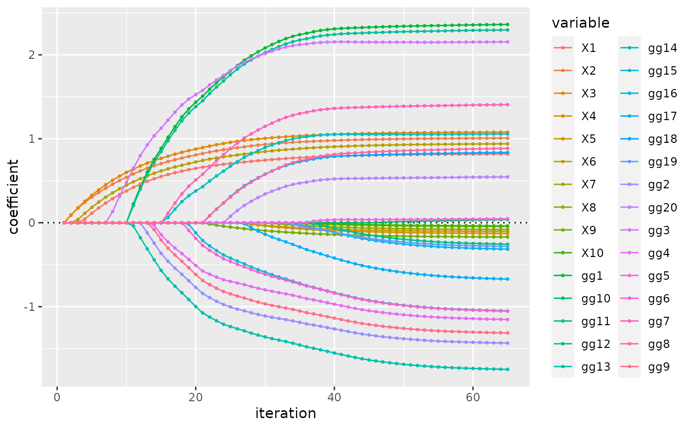
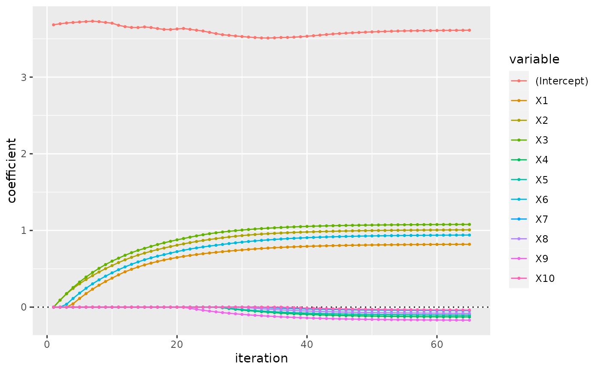
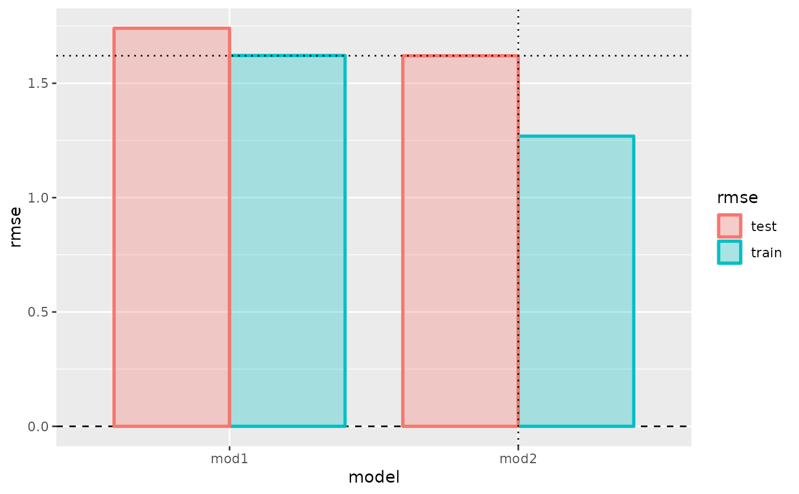
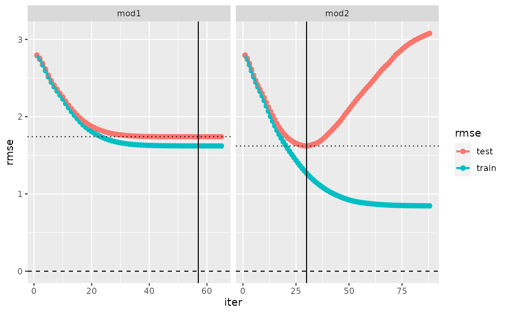

formula-based wrapper for glmnet()
fm_glmnet.Rdfm_glmnet() is a wrapper for glmnet() (from package glmnet)
that fits into the modeltuner framework.
The model is specified by the arguments formula and data.
The resulting models belong to the class of so-called iteratively fitted models,
see ifm and vignette("ifm") for information.
Usage
fm_glmnet(
formula,
data,
weights = NULL,
family = c("gaussian", "binomial", "poisson"),
pref_iter = NULL,
na.action = na.omit,
keep_x = TRUE,
...
)
# S3 method for fm_glmnet
predict(
object,
newdata,
pref_iter = object$pref_iter,
s = tail(object$fit$lambda, 1),
...
)
# S3 method for fm_glmnet
coef(object, s = tail(object$fit$lambda, 1), ...)
# S3 method for fm_glmnet
plot(
x,
coefs = NULL,
intercept = FALSE,
plot_type = c("colors", "facets"),
size = 0.6,
lwd = 0.5,
...,
plot = TRUE,
zeroline = TRUE
)Arguments
- formula
A
formula.- data
A
data.frame- weights
weights
- family, ...
Passed to
glmnet(). Not all will work properly: avoid argument settings that change the structure of the output ofglmnet()! Inplot.fm_glmnet(), “...” are passed to bothgeom_point()andgeom_line().- pref_iter
An integer, the preferred iteration. This is the iteration that is used by default when predictions from the model are computed with
predict(). Ifpref_iter=NULL, the last iteration will be used. Seeifmandvignette("ifm")for information on the concepts of iteratively fitted models and preferred iterations. The preferred iteration of a model can be changed without re-fitting the model, seeset_pref_iter().- na.action
A function which indicates what should happen when the data contain
NAs.na.omitis the default,na.excludeorna.failcould be useful alternative settings.- keep_x
Logical: Whether to keep the model matrix
xas a component of the return value.- object, x
Object of class “fm_glmnet”.
- newdata
Data for prediction.
- s
Choice of lambda.
- coefs
Character vector: An optional subset of
xvariables' names to be included in plot. By default, all are included.- intercept
Logical: Whether to include the intercept's profile in the plot.
- plot_type
A character string, either
colors(profiles of all coefficients are shown in same facet distinguished by colors) orfacet(profiles of different coefficients appear in separate facets).- size
Graphic detail: Size of point.
- lwd
Graphic detail: Line width of interpolating line.
- plot
Logical: If
TRUE, a ggplot is returned, ifFALSEadata.frame.plot()first prepares adata.frameand then draws some ggplot using this data, with limited options for customization. If you want to design your own plot, you can setplot=FALSE, and use thedata.framereturned byplot()to create your plot.- zeroline
Logical: Whether to include a horizontal reference line at level 0.
Value
fm_glmnet() returns a list of class “fm_glmnet” with components
fit: the fitted model, of class “glmnet”;
formula: the formula;
x: the model matrix (resulting from the
formulausingmodel.matrix());weights: the fitting weights;
xlevels: list of the levels of the factors included in the model;
pref_iter: the preferred iteration, an integer (see argument
pref_iter);na.action: the
na.actionused during data preparation;contrasts: the
contrastsused during data preparation;call: the matched call generating the model.
Details
family must be one of "gaussian", "binomial", "poisson".
The parameters x and y to be passed to glmnet() are extracted from
formula and data by means of model.frame, model.matrix
and model.response.
Features of cross-validation of models generated with fm_glmnet():
The model class “fm_glmnet” belongs to the class of so-called iteratively fitted models; see ifm and
vignette("ifm")for information on the peculiarities of cross-validating such models. In particular, note the role of the parameteriterincv().When
cv()is executed withkeep_fits=TRUE, the fitted models from cross-validation that are stored in the result (and returned byextract_fits()) will not be of class “fm_glmnet”, but of class “glmnet”,
See also
glmnet, cv.glmnet (both from package glmnet);
ifm and vignette("ifm"); fit.model_fm_glmnet; set_pref_iter
Examples
d <- simuldat()
(mod1 <- fm_glmnet(Y ~., d))
#> Fitted model of class ‘fm_glmnet’
#> formula: Y ~ X1 + X2 + X3 + X4 + X5 + X6 + X7 + X8 + X9 +
#> X10 + g - 1
#> data: d (500 rows)
#> call: fm_glmnet(formula = Y ~ ., data = d)
#> iterations: 65
#> pref_iter: 65
(mod2 <- fm_glmnet(Y ~.^2, d))
#> Fitted model of class ‘fm_glmnet’
#> formula: Y ~ X1 + X2 + X3 + X4 + X5 + X6 + X7 + X8 + X9 +
#> X10 + g + X1:X2 + X1:X3 + X1:X4 + X1:X5 + X1:X6 +
#> X1:X7 + X1:X8 + X1:X9 + X1:X10 + X1:g + X2:X3 +
#> ... [formula cut off - 66 terms on rhs]
#> data: d (500 rows)
#> call: fm_glmnet(formula = Y ~ .^2, data = d)
#> iterations: 88
#> pref_iter: 88
# Plot mod1:
plot(mod1)

# Plot profiles for a subset of the coefficients' only and the intercept
plot(mod1, coefs = paste0("X", 1:10), intercept = TRUE)

# Cross-validate
mycv <- cv(c(model(mod1, label = "mod1"),
model(mod2, label = "mod2")),
nfold = 5)
mycv
#> --- A “cv” object containing 2 validated models ---
#>
#> Validation procedure: Complete k-fold Cross-Validation
#> Number of obs in data: 500
#> Number of test sets: 5
#> Size of test sets: 100
#> Size of training sets: 400
#>
#> Models:
#>
#> ‘mod1’:
#> model class: fm_glmnet
#> formula: Y ~ X1 + X2 + X3 + X4 + X5 + X6 + X7 + X8 + X9 +
#> X10 + g - 1
#> metric: rmse
#>
#> ‘mod2’:
#> model class: fm_glmnet
#> formula: Y ~ X1 + X2 + X3 + X4 + X5 + X6 + X7 + X8 + X9 +
#> X10 + g + X1:X2 + X1:X3 + X1:X4 + X1:X5 + X1:X6 +
#> X1:X7 + X1:X8 + X1:X9 + X1:X10 + X1:g + X2:X3 +
#> ... [formula cut off - 66 terms on rhs]
#> metric: rmse
#>
#> Preferred iterations:
#> model ‘mod1’: min (iter=57)
#> model ‘mod2’: min (iter=30)
# Plot cv_performance and evaluation_log:
plot(cv_performance(mycv))

plot(evaluation_log(mycv))
